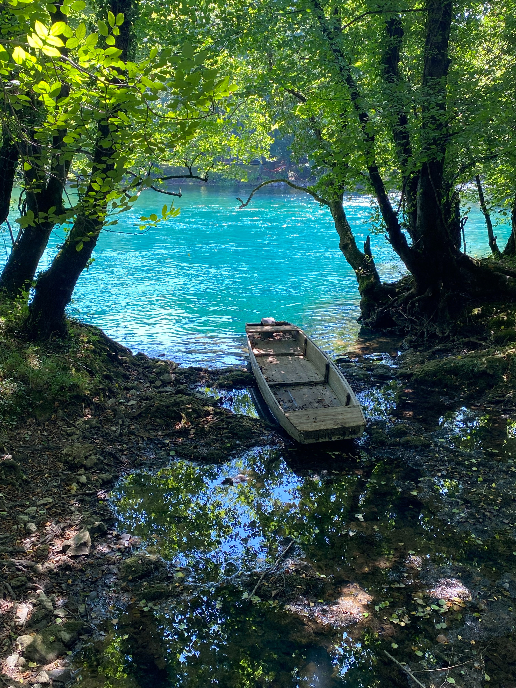

Why Warm Weather is Better
And even though Vitamin D is so important for your health, researchers at Central Washington University claim that 77% of people are vitamin D deficient because they don’t get enough sunlight. If you’re locked up most of the year indoors because of cold temperature, ice and snow, it may be time to consider a move somewhere with more sunshine. Research shows that your overall alertness & mental performance is at its best when your body temperature is high. Staying warm in nice weather helps keep you alert and improves your memory. And sure, you can keep your body temperature up regardless of the temperature outside, but it’s a lot easier when you don’t have to wear 7 layers just to stay warm.Activities That You Can enjoy in Warm Weather
There are plenty of outdoor activities that can be done all year round as opposed to just being reserved for summer
- Swimming
- Picnics
- PLaying Outdoor Sports
- Hiking

After a long day in the hot sun we can enjoy a cold relaxing shower or take a swim in a river and enjoy cold drinks under the shade of trees.
